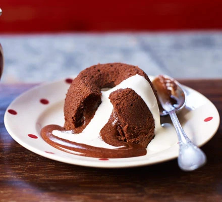

Chocolate Molten Cake Recipe

With velvety soft cake encasing a gooey liquid chocolate center, this dessert will wow you and your guests at how simple and tasty this recipe is!
Preparation Time
15 minutes
Cooking Time
20 minutes
Serves
6
Ingredients
- 100g butter, plus extra to grease
- 100g dark chocolate, chopped
- 150g light brown soft sugar
- 3 large eggs
- ½ tsp vanilla extract
- 50g plain flour
- single cream, to serve
Method
- Heat oven to 200C/180C fan/gas 6. Butter 6 dariole moulds or basins well and place on a baking tray.
- Put 100g butter and 100g chopped dark chocolate in a heatproof bowl and set over a pan of hot water (or alternatively put in the microwave and melt in 30 second bursts on a low setting) and stir until smooth. Set aside to cool slightly for 15 mins.
- Using an electric hand whisk, mix in 150g light brown soft sugar, then 3 large eggs, one at a time, followed by ½ tsp vanilla extract and finally 50g plain flour. Divide the mixture among the darioles or basins.
- You can now either put the mixture in the fridge, or freezer until you're ready to bake them. Can be cooked straight from frozen for 16 mins, or bake now for 10-12 mins until the tops are firm to the touch but the middles still feel squidgy.
- Carefully run a knife around the edge of each pudding, then turn out onto serving plates and serve with single cream.